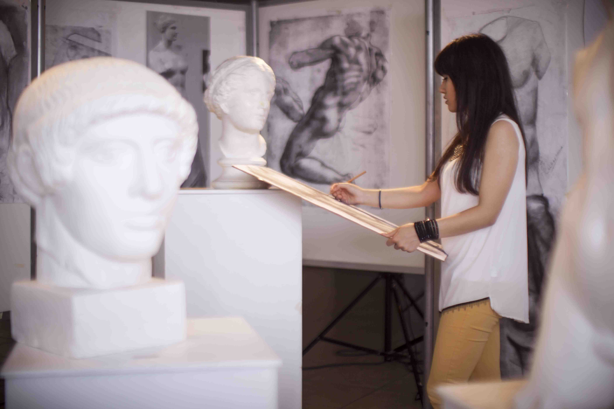
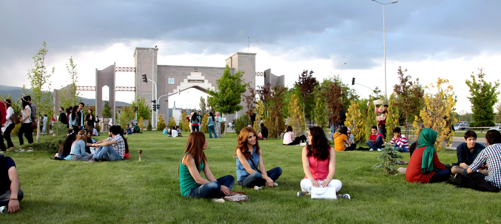
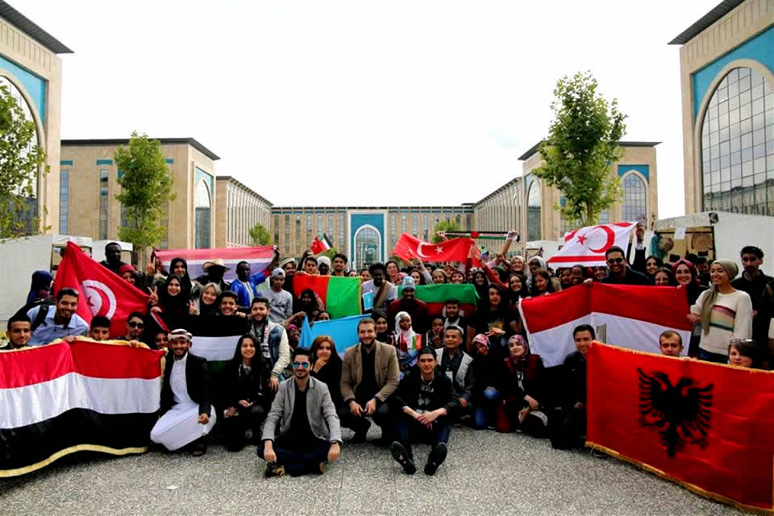

TURKIYADA O'QISH UCHUN 10 SABAB
 1 - Sifatli Oliy Ta'lim Imkoniyatlari
1 - Sifatli Oliy Ta'lim Imkoniyatlari
Turkiya 94.2% maktab attestati bilan oliy ta'limga kirish uchun dunyodagi ikkinchi mamlakatdir. Yevropa Oliy ta'lim sohasida ishtirok etayotgan Turkiya Bolonya jarayonini mukammal amalga oshirmoqda; Bolonya hisobotta 5dan 5 bahosiga ega. Boshqacha qilib aytganda, Turkiyadagi universitetdan olgan diplomingiz barcha Evropa mamlakatlarida tan olingan! ECTS Evropa standartlariga muvofiq qo'llaniladi. Bundan tashqari, Turkiya Erasmus almashish dasturlarida ishtirok etadi. Erasmusdan tashqari, Turkiyada Mavlono va Farobiy kabi ko'plab almashish dasturlari mavjud bo'lib, ular talabalarni harakatchanligini qo'llab-quvvatlaydi.
2 - Turli universitetlar va dasturlar
Turkiyada 206 million aholiga ega 82 universitetlar mavjud. O'quvchilar soni 8 millionga yaqin. Ushbu talabalar soni bilan Turkiya Yevropa Oliy ta'lim sohasida eng ko'p talabaga ega bo'lgan birinchi mamlakatdir. 58,092 universitetlarida 206 turli dasturlar mavjud. Siz, albatta, ushbu turli universitetlar va dasturlar ichidan sizga mos bolganini topishingiz mumkin.

3 - Ko'p madaniyatli hayot
Ming yillar davomida o'z hududida ko'plab uzoq muddatli tsivilizatsiyalarga ega bo'lgan Turkiya deyarli madaniyat mozaikasidir! Son-sanoqsiz sivilizatsiyalar joylashtirilgan bu mamlakatda hamma bir-biriga chidamli va hurmat bilan qaraydi. Turkiyada, sizning ildizingizning bir qismini topishingiz mumkin va ehtimol sizning tilingizda gapiradigan odamlar bilan uchrashishingiz mumkin Turkiya, uning xavfsiz va tinch muhit bilan talabalar uchun ideal hisoblanadi.
4 - Tabiiy Go'zallik
To'rt faslda yashovchi, Turkiya butun dunyoda o'zining tabiiy go'zalligi bilan obro ' - e'tiborga ega. Siz Turkiyani atrofidagi dengizlarda suzish va suv sport bahramand bo'lishingiz mumkin, tog'larda ko'plab shaharlarda tosh, daryolar rafting va ko'p ekstremal sport bilan shug'ullanish mumkin. Turkiyada siz o'zingizni osmonda his qilasiz. Bu go'zallar sizni o'z qarashlari bilan maftun etadi!
5 - Tarixiy va madaniy meros
Uzoq tarixga asoslanib, Turkiyada minglab tarixiy va madaniy yodgorliklar mavjud bo'lib, ularning aksariyati YUNESKO madaniy merosi sifatida himoyalangan. Hatto kundalik hayotimizda, ham siz tez-tez duch keladigan tarixiy izlarni kuzatishingiz mumkin!
6 - Talabalar Do'stligi

Har bir shaharlarida universitetga ega bo'lgan Turkiya, aynan talaba-do'st mamlakatidir! Har bir universitetda ijtimoiy to'garaklar, sport jamoalari va madaniy tadbirlar talabalarni bir joyga jamlab, uzoq geografiyalarni bir-biriga yaqinlashtiradi. Turkiyaga kelganingizda, shaharning eng faol nuqtalari talabalar bilan muloqot qiladigan joylar ekanligini tushunib etasiz! Shaharlar kafe, restoran va kutubxonalar tufayli kuniga 24 soat yashaydi.
7 - Mehmondo'st Turk Fuqarolari
Turk xalqining mehmondo'stligi butun dunyoda afsonaviy bo'lib hisoblanadi! Agar yordam so'rasangiz, ular samimiylik bilan yordam qilishlariga amin bo'lishingiz mumkin. Turklar sizni mehmon sifatida qabul qilishadi va sizga o'z muomalalarini inkor etishmaydi. Shu tarzda, siz doimo o'zingizni xuddi uyda bo'lganday his qilasiz.
8 - Zamonaviy Texnologik Kampuslar
206 universitetlaridan qaysi biriga bormang, eng so'nggi texnologiyalar bilan jihozlangan zamonaviy va qulay kampus hayotini boshdan kechirasiz.
9 - Oson yashash sharoitlari

Turkiyada hayot boshqa mamlakatlarga nisbatan ko'proq eng iqtisodiy bolib hisoblanadi. Turar joy, oziq-ovqat va ichimlik va o'yin-kulgi kabi ehtiyojlaringizni arzon narxlarda qondirishingiz mumkin. Universitet kampuslari ichida yoki yaqindagi yotoqxonalarda qolishingiz mumkin yoki ijaraga uyni olishingiz mumkin. Bundan tashqari, siz talaba bo'lganingiz uchun hamma joyda talabalar uchun maxsus chegirmalari bilan foydalanishingiz mumkin. Avtobuslarda siz talabalar uchun maxsus diskont kartasidan foydalanishingiz va kinoteatrlarda arzonroq filmlarni tomosha qilishingiz mumkin.
Bundan tashqari, Markaziy Osiyo va Evropaning qit'alarida joylashganligi sababli Turkiyaga borish oson. Ko'p sonli diqqatga sazovor joylarga ega bo'lgan Turkiyaga qaysi yo'lni tanlashingizdan qat'i nazar, kerakli joyga tez va qulay tarzda etib olishingiz mumkin.
10 - Turk Tilini O'rganish Imkoniyatlari
Turkiyadagi universitetlarda ko'plab dasturlar ingliz tilida. Shuningdek, siz turk tilini osongina o'rganishingiz mumkin. Universitetingiz tomonidan taqdim etilgan turk turk kurslari sizga yangi tilni o'rganish imkoniyatini beradi va turli madaniyatlardagi odamlar bilan do'stlashib qisqa vaqt ichida turk tilida gapirishni boshlashingiz mumkin